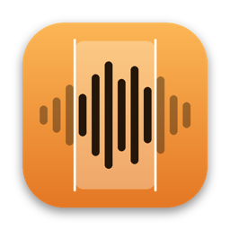
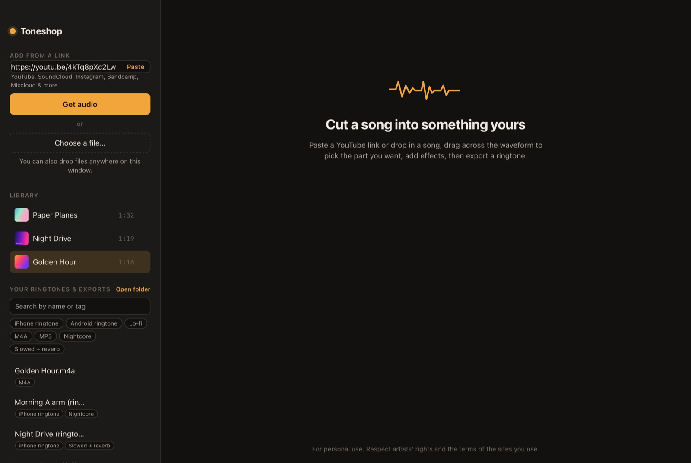

ToneshopToneshop turns a link or a song file into a ringtone, alarm or remix in a few clicks. A native Mac app with no account and no uploads.
YouTube, SoundCloud, Instagram and more, or drop in your own file.
Best part finds the chorus. Snap to beat keeps the loop clean.
iPhone, Android, MP3, M4A or WAV, ready in your Ringtones folder.

Jumps straight to the chorus.
Cuts land on the beat, so the loop is clean.
From a bathroom to a stadium, plus 8D and tape stop.
Exports tag themselves. Search, rename, play again.
Toneshop is a free hobby project and isn't signed with a paid Apple developer account, so macOS asks you to approve it once. After that it opens normally.
Apple could not verify "Toneshop" is free of malware that may harm your Mac or compromise your privacy.
What you'll see in step 2
FFmpeg does all the audio work: decoding, effects and every export format.
yt-dlp gets the audio from the links you paste, with Deno to help it read YouTube.
ONNX Runtime (© Microsoft, MIT licence) runs the vocal remover on your Mac.
UVR MDX-Net (Ultimate Vocal Remover project) is the model that tells singing from music.
Each tool keeps its own licence. The licence texts are included with the app, under About Toneshop.
Toneshop is free and provided as is, without warranty. Only use songs you have the right to use, and follow the terms of the sites you get them from.
Yes. No ads, no account, no trial. It's a personal project shared as is.
Apple shows that warning for apps that aren't signed with a paid developer account. Toneshop is free, so it isn't. You approve it once (the four steps above) and it opens normally after that.
Not yet. Toneshop needs a Mac with Apple silicon (M1 or later) and macOS 13 Ventura or later.
Plug your iPhone into your Mac. Toneshop's guide spots it, opens the ringtone in Finder and shows you where to drop it. It then appears under Settings ▸ Sounds ▸ Ringtone. iPhone ringtones can be up to 40 seconds, and Toneshop keeps them under that.
Export "Android ringtone", copy the file to your phone (cable, Drive, or Quick Share), then pick it in Settings ▸ Sound ▸ Phone ringtone.
Toneshop is a tool, a bit like a recorder: what you use it on is up to you. Only use songs you own or have permission to use, and follow each site's terms. YouTube's terms, for example, don't allow downloading except where YouTube itself offers it. Songs you've made or files you already have the rights to are the safe choice.
Toneshop tells you when a new version is out. Download it and drag it into Applications to replace the old one; your songs and ringtones stay where they are.